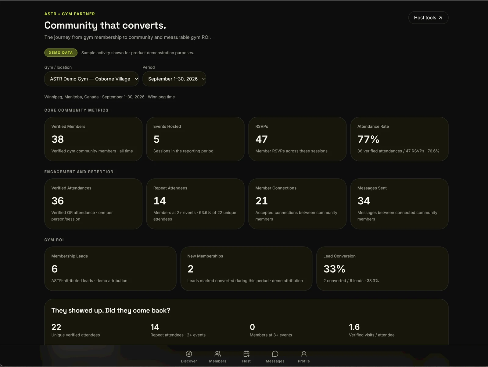
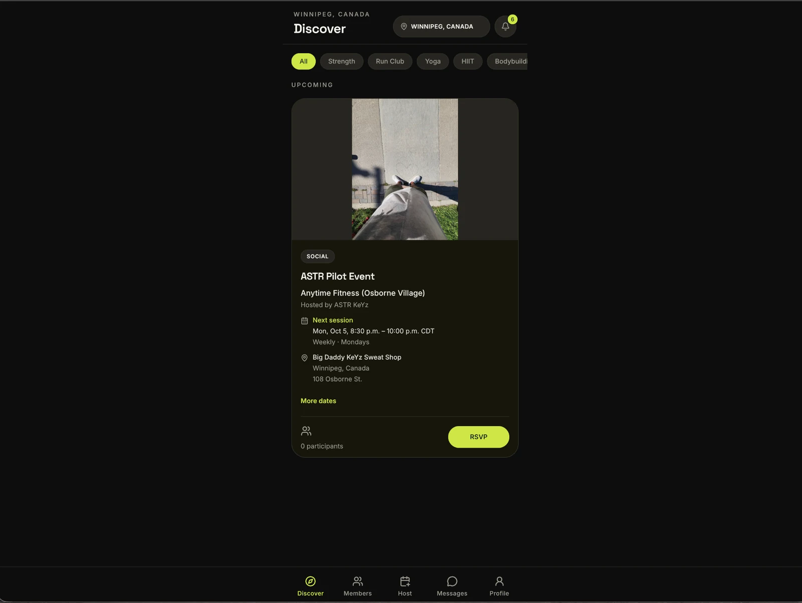
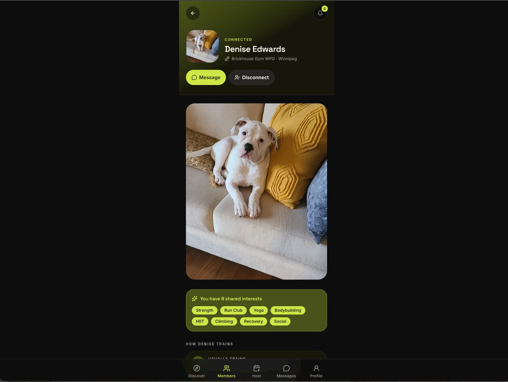
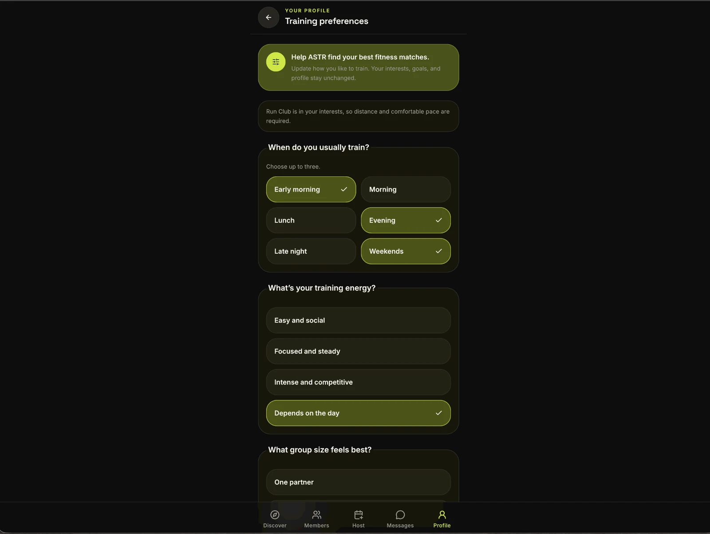

Member identity
Verified gym communities, rich profiles, interests, preferences, discovery, and messaging.
ASTR starts where fitness communities already gather: gyms, studios, and clubs. Connect members with trainers and staff, turn shared workouts into lasting relationships, and give operators a way to measure engagement.


Gyms already bring members, trainers, and staff into the same physical space. Sharing a membership, though, doesn’t automatically create a relationship.
Our go-to-market hypothesis is to activate that concentrated audience location by location—not acquire isolated app users across an entire city.
Events create shared experiences. Afterglow helps people reconnect. Consent-based attendance and engagement signals help operators understand what brings people back.
The existing gym membership is our starting audience. The trainer and staff relationships are the trust layer. Recurring experiences are the activation engine. We test density in one location before expanding to the next.
Local density before broad reach. A community with meaningful repeat interactions can be more valuable than a city of disconnected downloads.
Partner with a gym or studio that already has members, trainers, staff, and an established meeting place.
Verified onboarding, trainer-led events, QR check-ins, and Afterglow turn proximity into recurring connections.
Measure activation, connection, return visits, and operator value. Refine the playbook before moving to another location.
Promotion → single event → optional follow-up
Effective for discovering individual experiences. A lasting social network requires additional repeat engagement.Membership base → trainer + staff connections → recurring events → Afterglow → return
Our proposed advantage is embedded access to recurring communities—not exclusive ownership of them.Why now: Fitness experiences are becoming social products. Our opportunity is to validate a gym-embedded distribution model in Canadian communities while the category is still taking shape. Competitive timing and network effects are strategic hypotheses—not claimed pilot results.
ASTR complements existing gym membership, access, and billing systems. Our wedge is the layer between members, trainers, staff, and real-world sessions: identity, events, connections, and operator engagement insights.
Real ASTR screens from the working MVP.



Verified gym communities, rich profiles, interests, preferences, discovery, and messaging.
Hosted and recurring sessions turn “community” from brand copy into scheduled real-world behaviour.
QR check-in turns attendance into verified first-party behavioral data instead of likes, impressions, or self-reported participation.
Attendees can reconnect after a shared event, extending a workout into an actual member relationship.
Track RSVP, attendance, repeat participation, member activity, and conversion signals from a gym-scoped dashboard.
Designed to plug into the systems large fitness operators already run—not force a rip-and-replace migration.
The gym seeds the first network. Members discover each other, show up together, reconnect afterward, and have a reason to return. The flywheel is a hypothesis we will measure in the pilot.
Understand which experiences turn existing members into active participants: opt-in connections, attendance, repeat visits, and conversion signals. Test whether better insights improve programming and operator outcomes.
More engaged members may mean better introductions and stronger reasons to return.
A participating audience can help hosts fill recurring sessions and test paid formats.
Community activity can guide programming and reveal possible retention or revenue opportunities.
Network effects are not assumed. The pilot will test whether connection density and repeat participation improve together.
Trainers, instructors, and run-club leaders are natural community connectors. Inside partner locations, their recurring sessions create reasons to participate. Outside the gym, their audiences can extend reach. Paid experiences are a future monetization test—not a requirement for the first pilot.
Illustrative gross revenue only, before venue costs, taxes, and any splits. ASTR’s MVP does not process payments; paid-event monetization is a future hypothesis to test, not existing platform revenue.
Gym community + host audience → event → attendance → connections → return → next event.
The near-term incentive: members gain people to train with, hosts gain participation, and operators gain visibility into engagement. Revenue models can be tested after those behaviors are demonstrated.
Targeting a first Winnipeg gym pilot: activate its existing membership base through trainers and recurring sessions, then observe verified onboarding, RSVP-to-attendance conversion, Afterglow connections, and 30-day repeat participation. Partner results have not yet been established.
Onboard a concentrated group of verified gym members, recruit staff and trainer hosts, run recurring sessions, and instrument RSVP → QR attendance.
Measure connection rate, repeat attendance within 30 days, host participation, gym inquiries, and operator feedback.
Only after proving repeat behavior, test whether acquisition and engagement patterns transfer to another gym or community.
MVP product screens use demo data. Acquisition costs, retention effects, and operator ROI are pilot measurements to be validated—not historical performance claims.
Gyms already have the building blocks: a recurring audience, coaches, staff, and a place to meet. ASTR aims to connect them through shared experiences and show operators which interactions create lasting engagement.
Shared space, few introductions
Members discover events elsewhere
Trainer reach is fragmented
Disconnected event history
Little insight into member connections
Repeat engagement hard to attribute
Gym-first verified onboarding
Trainer and staff-led activation
Recurring local experiences
QR-verified event participation
Afterglow and member relationships
Consent-based engagement insights
Pre-seed capital is intended to turn the built MVP into a measurable Winnipeg pilot: activate an existing member base, test whether social connections increase repeat participation, establish operator value, and refine a location-by-location expansion playbook.
Founder & CEO. Former SkipTheDishes partnerships and GTM leader with a kinesiology background. Bringing marketplace distribution experience to gym-first community infrastructure, relationship activation, and operator economics.
View founder background ↗ASTR brings the relationships already forming in fitness communities online—and back into the gym.